Da economia inteira às decisões públicas
A macroeconomia estuda a evolução conjunta de produção, renda, emprego, preços e relações com outros países. Políticas econômicas tentam influenciar esses resultados. Para saber se funcionaram, precisamos medi-los com critérios coerentes: é aí que a contabilidade nacional entra na segunda parte da aula.
Agregados e horizonte de análise
O que se observa
Produto e renda: valor produzido e renda gerada. Consumo, poupança e investimento: usos da renda e formação de capacidade produtiva. Emprego e desemprego: uso do trabalho. Nível geral de preços: variação do poder de compra da moeda.
Juros, moeda, câmbio e balanço de pagamentos: condições financeiras e relações econômicas com o exterior. Uma variação isolada não conta a história inteira: compare período, unidade, preços e contexto.
Curto e longo prazo
Os slides distinguem problemas de estabilização, como desemprego e inflação, de questões de desenvolvimento e capacidade produtiva, como tecnologia, qualificação e indústria. Na prática, as duas escalas se influenciam.
Exemplo: uma queda de investimento reduz a demanda agora e pode diminuir a capacidade de produção mais adiante.
Metas macroeconômicas e conflitos entre objetivos
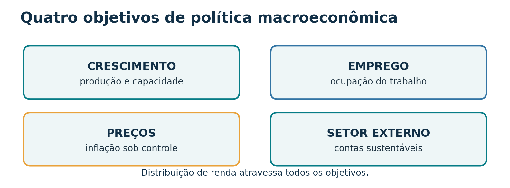
Crescimento e desenvolvimento
Crescimento: aumento do produto ou da renda, em termos reais quando se compara volume ao longo do tempo. Desenvolvimento: inclui condições de vida, distribuição, saúde, educação e ambiente. Produzir mais pode ajudar, mas não descreve sozinho quem se beneficia.
Emprego e inflação
Mais atividade pode elevar o emprego. Quando setores operam perto da capacidade e os insumos escasseiam, pressões de custo podem aparecer. Ganhos de produtividade e condições de oferta mudam esse efeito: não há uma troca fixa válida para toda época.
Estabilidade dos preços
Inflação é aumento persistente e generalizado dos preços. Os slides distinguem pressões de demanda, de custos e inerciais. Preços estáveis ajudam contratos e planejamento; inflação elevada tende a atingir mais quem dispõe de menor proteção financeira.
Equilíbrio externo e distribuição
Déficits externos persistentes exigem financiamento; superávits e entradas de capital também trazem efeitos sobre câmbio e política econômica. A distribuição depende de salários, tributos, serviços públicos e oportunidades.
Escolhas públicas: uma medida pode favorecer um objetivo e dificultar outro. A análise exige identificar mecanismo, prazo e grupos afetados, sem tratar qualquer relação como automática.
Quatro mercados organizam a análise
| Mercado | Variáveis destacadas | Pergunta de aula |
|---|---|---|
| Bens e serviços | Produto e nível de preços | Quanto se produz e compra? |
| Trabalho | Emprego e salários | Quem encontra trabalho e a que remuneração? |
| Financeiro e monetário | Juros, crédito e moeda | Quanto custa financiar gastos? |
| Divisas | Taxa de câmbio | Qual o preço relativo da moeda estrangeira? |
Conexão: uma mudança nos juros pode afetar crédito e investimento; estes afetam gasto, produção e emprego. O câmbio altera custos e competitividade de forma diferente entre setores.
Política fiscal: tributos, gastos e resultado das contas públicas
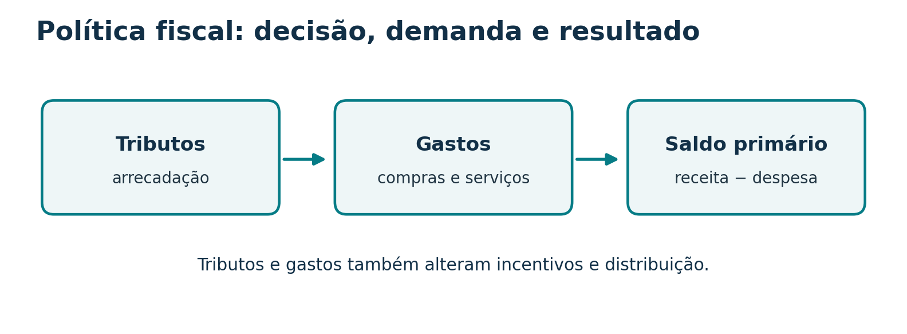
Arrecadação: tributos afetam renda disponível, custos e incentivos. Gastos: compras do governo demandam produção; transferências redistribuem renda, mas não entram diretamente em G na fórmula do PIB. Tributos progressivos e a composição dos serviços públicos podem alterar a distribuição.
Expansão fiscal
Aumento de gastos ou redução de tributos tende a sustentar a demanda, dependendo da capacidade ociosa, da reação dos agentes, das importações e da forma de financiamento.
Contração fiscal
Redução de gastos ou aumento de tributos tende a conter a demanda no curto prazo. Os efeitos sobre inflação, dívida e crescimento dependem do contexto e da composição da medida.
Não confundir: déficit é resultado de fluxo em um período; dívida é estoque acumulado. Resultado primário exclui juros da dívida na sua apuração; resultado nominal os incorpora segundo a metodologia fiscal pertinente. Os slides 19–21 usam valores de 2023 e servem como exercício de leitura histórica, não como situação atual.
Política monetária: moeda, juros e crédito
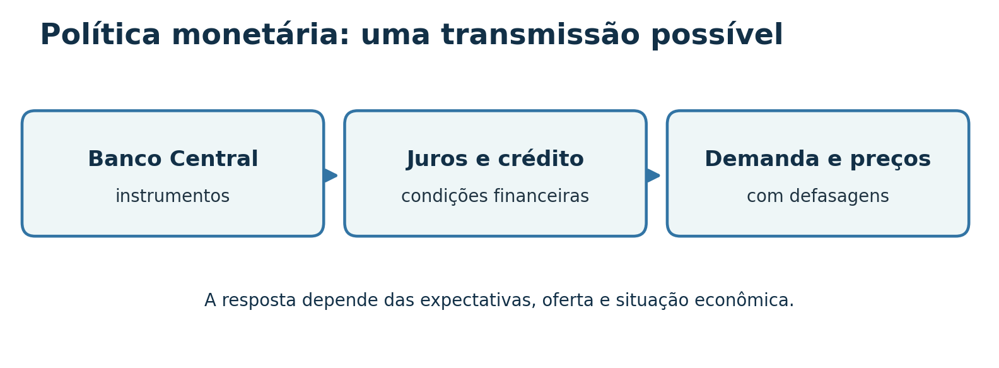
| Instrumento citado nos slides | Como entender | Canal principal |
|---|---|---|
| Operações de mercado aberto | Compra e venda de títulos pelo Banco Central | Liquidez e condições de juros |
| Reservas compulsórias | Parcela de recursos que instituições recolhem | Liquidez bancária e crédito |
| Redesconto / assistência de liquidez | Operações do Banco Central com bancos | Liquidez do sistema |
| Taxa básica e comunicação | Orientação das taxas de mercado e expectativas | Financiamento, consumo e investimento |
Exemplo didático: juros maiores podem tornar financiamento mais caro, reduzir certas compras a prazo e moderar a demanda. O repasse aos preços não é instantâneo nem garantido na mesma intensidade.
A enumeração preserva os instrumentos do material, mas a prática operacional pode evoluir. A ideia de que política fiscal sempre demora e monetária sempre age de imediato, no slide 15, é uma simplificação; ambas têm prazos de decisão e de efeito.
Políticas cambial, comercial e de rendas
Câmbio e comércio
Política cambial trata do regime e das intervenções na taxa de câmbio. Política comercial inclui tarifas, regras, cotas e incentivos que afetam importações e exportações. Uma desvalorização cambial pode beneficiar exportadores e elevar o custo doméstico de insumos importados.
Política de rendas
Intervenções diretas em salários e preços tentam influenciar sua formação. O material menciona também lucros, juros e aluguéis. Para avaliar uma medida, pergunte: qual preço está sendo controlado, por quanto tempo e que efeitos pode haver sobre oferta e contratos?
Duas contas externas: X − M ajusta o PIB pela despesa. Rendas primárias recebidas ou enviadas ao exterior ajustam o PIB para chegar à renda nacional bruta (PNB na terminologia dos slides). Uma importação não é a mesma coisa que uma remessa de lucros.
Por que a política econômica precisa da contabilidade nacional?
As metas anteriores só podem ser discutidas seriamente quando as variáveis têm definição, período e unidade claros. O PIB mede produção, mas não equivale ao orçamento público, ao estoque de dívida ou ao balanço de pagamentos. Cada um desses registros responde a outra pergunta.
| Questão | Conta ou indicador |
|---|---|
| Quanto o país produziu? | PIB, por produto, despesa ou renda. |
| Como evoluem os preços? | Índices de preços. |
| Qual foi o resultado fiscal? | Receitas e despesas públicas conforme a metodologia. |
| Como o país se relaciona financeiramente com o exterior? | Balanço de pagamentos. |
Três formas de observar a mesma produção
Quando uma economia produz um bem final, alguém compra esse bem e a produção gera renda para quem trabalhou e para os proprietários dos fatores. As contas nacionais organizam esses registros por período e evitam contar o mesmo insumo duas vezes.
Contabilidade nacional: o que entra na conta?
PIB em linguagem direta
Valor dos bens e serviços finais produzidos dentro do país durante um período. “Interno” indica o lugar da produção; “bruto” indica que a depreciação ainda não foi descontada.
O PIB mede um fluxo, como produção em um ano ou trimestre. Estoque de patrimônio é outra grandeza.
O limite da contagem
Um bem é final conforme seu uso no período: farinha usada pela padaria é insumo; farinha comprada por uma família para uso próprio é consumo final.
Revenda de um produto usado não cria nova produção do bem. O serviço corrente de intermediação, quando houver, entra na conta.
Mapa: produção corrente → bens e serviços finais → valor em moeda → agregado econômico.
Fluxo circular: por que as óticas se encontram?
As empresas entregam produtos, recebem pagamentos e distribuem o valor gerado em remunerações. No modelo simples, a despesa de um agente corresponde à receita de outro. Governo, investimento e comércio externo tornam o circuito mais completo, mas a identidade permanece.
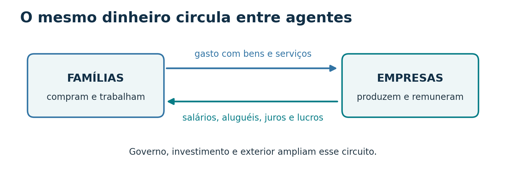
Na prática estatística, fontes e métodos podem produzir discrepância residual; a identidade é o princípio de organização das contas.
Produto: somar o valor que cada etapa acrescentou
O valor adicionado (VA) em cada etapa é o valor da produção menos o consumo intermediário. A soma dos VA evita contar trigo e farinha novamente dentro do pão.
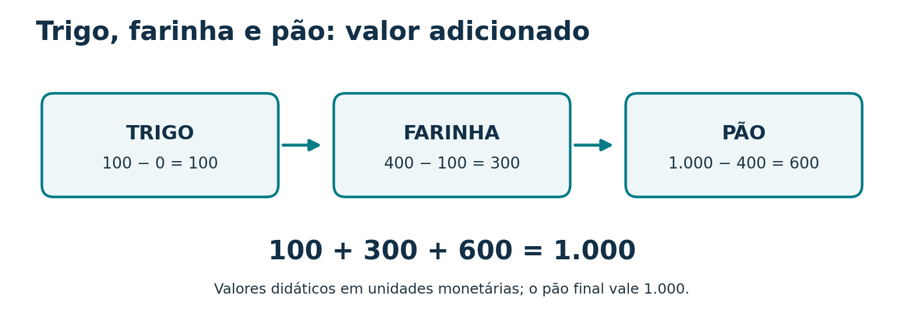
| Etapa | Venda | Insumo comprado | Valor adicionado |
|---|---|---|---|
| Trigo | 100 | 0 | 100 |
| Farinha | 400 | 100 | 300 |
| Pão | 1.000 | 400 | 600 |
| Total | 1.500 em vendas | 500 em insumos | 1.000 |
Teste: somar as vendas (1.500) superestima a produção final. Somar os valores adicionados (1.000) reproduz o preço do pão final. Com tributos sobre produtos e subsídios, para chegar ao PIB a preços de mercado: PIB = soma dos VAB a preços básicos + impostos sobre produtos − subsídios sobre produtos.
Despesa: identificar quem comprou a produção final
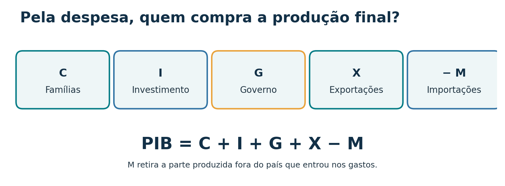
C: consumo final das famílias.
I: formação bruta de capital, incluindo máquinas, construções e variação de estoques.
G: consumo final do governo, como serviços públicos produzidos.
X: exportações de bens e serviços produzidos internamente.
M: importações, descontadas porque podem estar incluídas em C, I ou G e foram produzidas fora do país.
Três cuidados: comprar ações existentes não é investimento produtivo; transferências sociais não são, por si, compra governamental de produção corrente; mercadorias produzidas e estocadas no período entram em I mesmo sem venda final.
No exemplo do pão: se todo pão final foi comprado por famílias e não há governo, investimento nem setor externo, C = 1.000 e PIB = 1.000.
Renda: para quem foi o valor gerado?
Na conta simplificada da aula, a renda aparece como salários + juros + aluguéis + lucros. Para o PIB completo a preços de mercado, é preciso compatibilizar a remuneração dos fatores com o agregado bruto e com os tributos sobre a produção e os produtos.
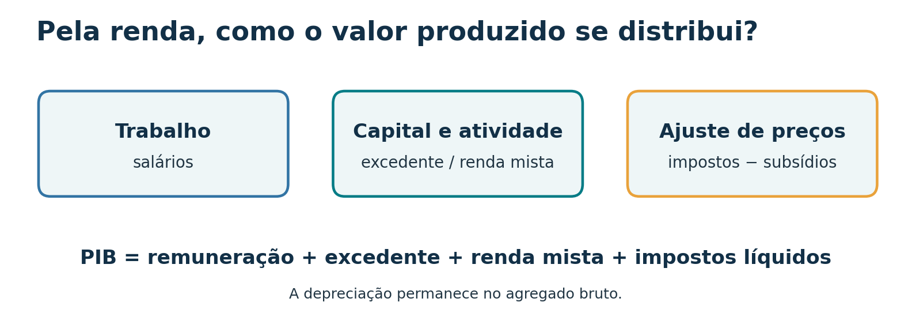
EOB é excedente operacional bruto. Rendimento misto inclui atividades em que não se separa nitidamente remuneração do trabalho e retorno do negócio. As rubricas oficiais são mais detalhadas; aqui estão agrupadas para fins didáticos.
Fechando o pão: suponha, apenas para ilustrar, que os 1.000 de valor adicionado se distribuam em 700 de remuneração do trabalho e 300 de excedente, sem tributos líquidos. Então 700 + 300 = 1.000, igual ao produto e à despesa.
Atenção à depreciação: como o PIB é bruto, ela não deve ser subtraída para calcular PIB. Ela é descontada quando se passa de produto bruto a produto líquido.
PIB, PNB e produto líquido: contas com fronteiras diferentes
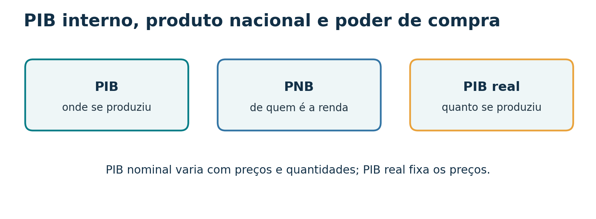
| Agregado | Pergunta | Relação |
|---|---|---|
| PIB | Qual produção ocorreu dentro do território? | Produção interna. |
| PNB (terminologia da aula) | Qual renda da produção cabe aos residentes? | PNB = PIB − renda enviada ao exterior + renda recebida do exterior. |
| Produto líquido | Quanto resta após desgaste do capital fixo? | Produto líquido = produto bruto − depreciação. |
Para uso atual das contas, “Renda Nacional Bruta (RNB)” é o termo técnico de referência para o conceito de renda dos residentes. Nos slides aparece “PNB”; mantivemos a nomenclatura de aula e explicitamos sua correspondência conceitual.
PIB nominal, real e per capita
Preços correntes ou constantes?
Nominal: produção avaliada aos preços do próprio período. Real: volume da produção comparado com preços constantes ou por índices de volume, separando variações de quantidade e de preço.
Se a quantidade de pão permanece igual e o preço sobe, o PIB nominal sobe. Esse aumento isolado não indica maior volume produzido.
Média por habitante
PIB per capita = PIB ÷ população. É uma média de produção por pessoa, não o salário que cada pessoa recebe nem uma medida completa de distribuição ou bem-estar.
Para comparar países, câmbio de mercado e paridade do poder de compra (PPC) respondem a perguntas diferentes.
Precisão histórica: o slide antigo do IDH apresenta pesos e componentes de uma metodologia anterior. Nesta síntese, o IDH aparece só como lembrete de que desenvolvimento exige indicadores além do PIB.
Como ler os gráficos sem misturar períodos e medidas
| Figura do material | Questão didática | Cuidado |
|---|---|---|
| Painel IBGE e indicadores de 2023 | Inflação e crescimento do PIB são a mesma coisa? | Um é variação de preços; outro trata do produto. Distinguir indicador, data e unidade. |
| Impostômetro, orçamento e resultado previdenciário de 2023 | Arrecadação é igual a PIB ou saldo fiscal? | Não. São perímetros, períodos e conceitos diferentes; orçamento previsto não é gasto realizado. |
| Infográficos internacionais de PIB e dívida | Qual comparação é feita: total, per capita, PPC, nominal ou dívida/PIB? | Conferir ano, moeda, fonte, metodologia e se o valor é realizado ou projetado. |
| Visualizações sobre riqueza | PIB anual equivale a riqueza acumulada? | Não. Produto é fluxo; riqueza e dívida são estoques. |
Ver quatro figuras originais da apresentação para análise em aula
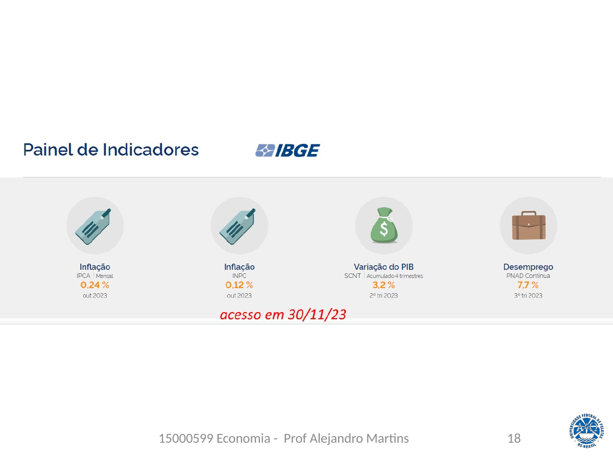
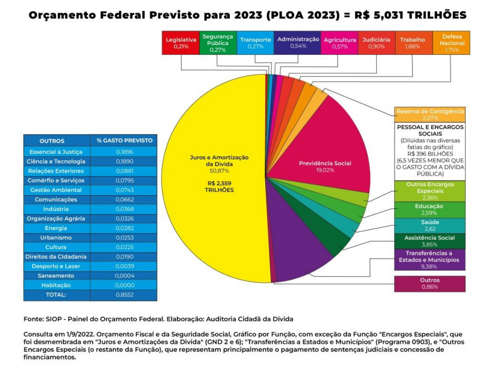
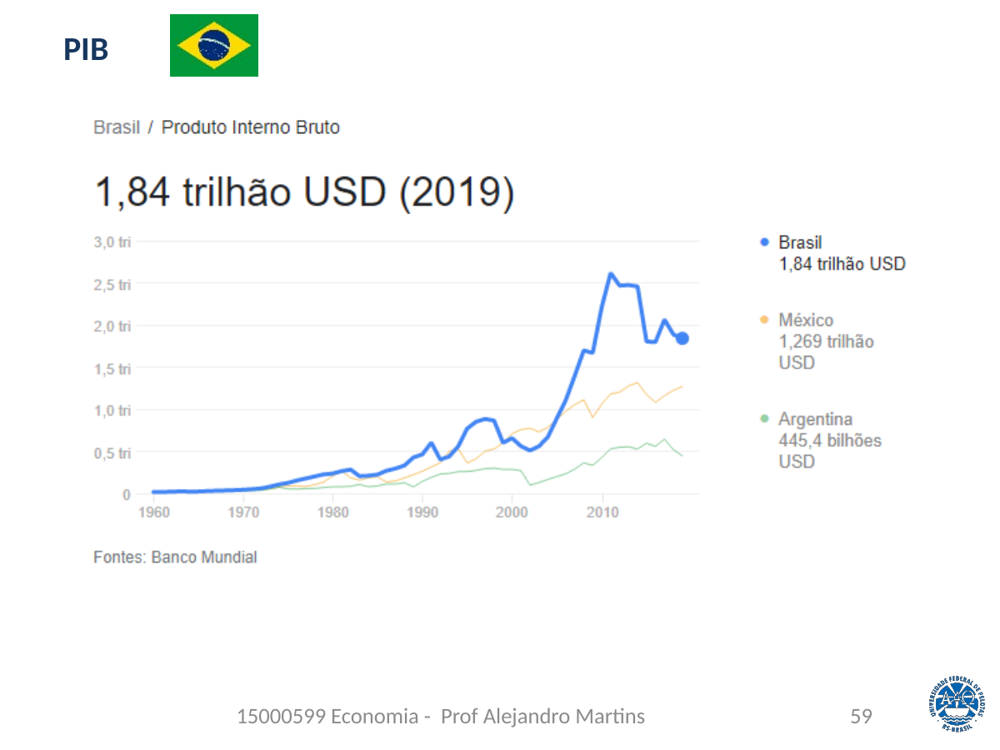
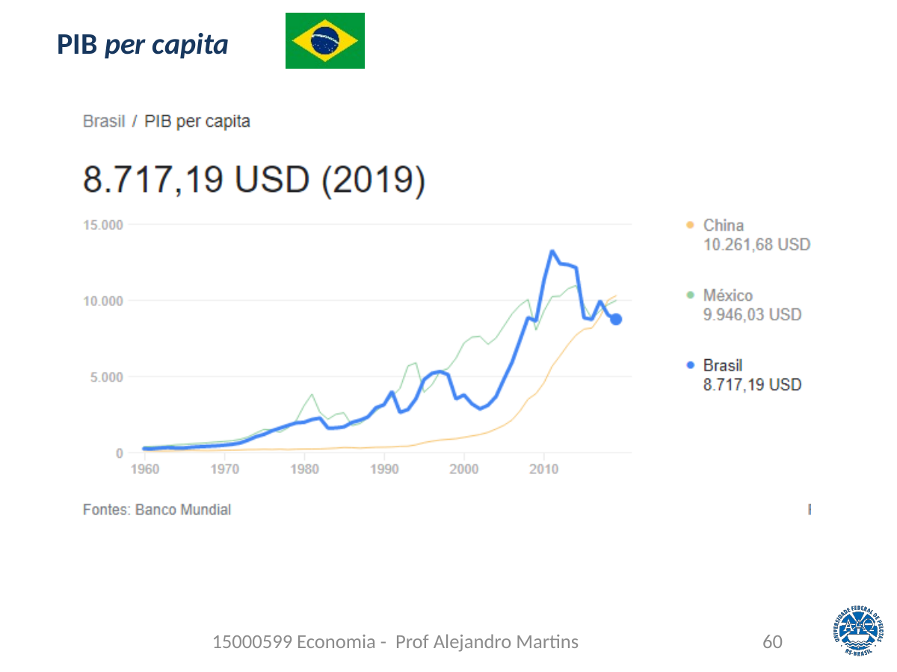
Algumas figuras exibem projeções para 2026 feitas em datas específicas. Esta aula não reproduz suas cifras como fatos observados. Use as imagens originais da apresentação para um exercício de crítica de fontes.
Origem das contas e uma ponte com Keynes
Os slides situam a consolidação da análise dos grandes agregados no contexto da crise dos anos 1930 e da obra de John Maynard Keynes. Também apresentam a construção histórica das contas nacionais brasileiras e a atuação do IBGE. A função didática desta seção é ligar a mensuração do PIB à pergunta: o que determina o nível de produção e emprego?
Consumo depende da renda
No modelo simplificado do apêndice, C = Ca + cY: Ca é o consumo autônomo e c é a propensão marginal a consumir, entre zero e um. Se a renda cresce 100 e c = 0,8, o consumo induzido cresce 80, sob as hipóteses do modelo.
Investimento pode oscilar
Expectativas sobre retorno futuro e condições financeiras tornam o investimento sensível à incerteza. Quando a demanda planejada cai, a produção e o emprego podem ficar abaixo da capacidade disponível.
Esta última igualdade explicita o multiplicador em uma economia fechada, sem governo e com preços e capacidade de oferta tratados de modo simplificado; é uma ampliação didática a partir dos slides 80–83, não uma fórmula universal para qualquer economia.
Nota de atualização: a descrição do IDH no slide 57 apresenta uma metodologia histórica, com pesos antigos. A aula usa a distinção conceitual crescimento × desenvolvimento sem reproduzir essa fórmula como vigente.
Fechamento das três óticas no exemplo do pão
| Ótica | Cálculo didático | Resultado |
|---|---|---|
| Produto | 100 + 300 + 600 em valor adicionado | 1.000 |
| Despesa | 1.000 em consumo final das famílias | 1.000 |
| Renda | 700 de remuneração + 300 de excedente | 1.000 |
Hipóteses do exemplo: economia simplificada, sem governo, tributos líquidos, setor externo ou estoques. A distribuição 700/300 é didática e foi acrescentada ao exemplo dos slides para fechar a ótica da renda.
32 questões com resposta comentada
1. O PIB mede um estoque ou um fluxo?
Um fluxo de produção durante um período, como trimestre ou ano.
2. A farinha é sempre um bem intermediário?
Não. Depende do uso: insumo para a padaria, consumo final quando comprada pela família.
3. Por que a revenda de um carro usado não soma novamente o valor do carro ao PIB atual?
O carro foi produzido em período anterior. Eventual serviço atual de intermediação pode integrar o PIB.
4. O que faz a despesa de um agente se relacionar à renda de outro no fluxo circular?
A compra vira receita da unidade produtora, que se distribui como remuneração e resultado da produção.
5. Qual é o valor adicionado da farinha se ela é vendida por 400 e comprou trigo por 100?
400 − 100 = 300.
6. Por que 100 + 400 + 1.000 não é o PIB da cadeia trigo–pão?
Porque trigo e farinha estão incorporados no pão. Somar 1.500 conta insumos mais de uma vez; o VA soma 1.000.
7. Qual ajuste leva a soma dos VAB a preços básicos ao PIB a preços de mercado?
Adicionar impostos sobre produtos e subtrair subsídios sobre produtos.
8. O que representam C, I e G em C + I + G + X − M?
Consumo das famílias, investimento ou formação bruta de capital, e consumo final do governo.
9. Por que M aparece com sinal negativo?
Para retirar dos gastos a produção importada, que ocorreu fora do território.
10. Uma máquina comprada pela fábrica entra em C ou I? E a compra de ações existentes?
A máquina nova destinada à produção entra em I. Comprar ações existentes troca titularidade de ativo financeiro e não gera investimento produtivo corrente.
11. Pães produzidos agora e guardados no estoque contam para o PIB do período?
Sim. A variação de estoques integra I, mesmo sem venda ao consumidor no período.
12. Na ótica simplificada dos slides, quais são as quatro remunerações da renda nacional?
Salários, juros, aluguéis e lucros. A apresentação completa do PIB exige ajustes e categorias agregadas compatíveis.
13. Se a remuneração é 700 e o excedente bruto é 300, sem tributos líquidos, qual o PIB pela renda?
1.000, o mesmo valor do produto final e do gasto final no exemplo.
14. Por que não se desconta depreciação ao calcular um produto bruto?
Porque “bruto” inclui o consumo de capital fixo. O desconto produz uma medida líquida.
15. Qual a diferença entre PIB e PNB no critério dos slides?
PIB usa território da produção; PNB ajusta a renda enviada e recebida do exterior para refletir a renda dos residentes.
16. Se a produção física não muda, mas preços sobem 10%, o que ocorre com o PIB nominal e o volume real?
O PIB nominal tende a subir; o volume real permanece igual nesse exemplo simplificado.
17. Quais agregados aparecem no começo dos slides?
Renda, emprego, produto, desemprego, investimento, moeda, poupança, juros, consumo, balanço de pagamentos, preços e câmbio.
18. Por que crescimento do PIB e desenvolvimento econômico não são sinônimos?
O PIB registra produção. Desenvolvimento também considera distribuição e condições sociais e ambientais.
19. Quais são as metas macroeconômicas principais apresentadas?
Crescimento, emprego, estabilidade de preços, equilíbrio externo e distribuição mais equitativa da renda.
20. Uma expansão do emprego sempre provoca inflação?
Não. Dependem da capacidade ociosa, da oferta e da produtividade, entre outros fatores.
21. Diferencie inflação de demanda, de custos e inercial.
Demanda: gasto pressiona a capacidade de oferta; custos: insumos ou salários pressionam preços; inercial: reajustes passados se propagam por contratos e expectativas.
22. Qual mercado ajuda a observar salários e emprego? E qual trata de câmbio?
Mercado de trabalho e mercado de divisas, respectivamente.
23. Cite duas decisões de política fiscal e seu efeito possível na demanda.
Elevar gastos pode sustentar demanda; elevar tributos pode reduzir renda disponível e parte da demanda, conforme contexto.
24. Qual a diferença entre déficit e dívida?
Déficit é um fluxo de determinado período; dívida é um estoque acumulado.
25. Resultado primário inclui juros da dívida?
Na apuração fiscal do resultado primário, juros da dívida ficam fora. O resultado nominal incorpora o custo financeiro segundo a metodologia aplicável.
26. Cite dois instrumentos monetários dos slides e seus canais.
Operações de mercado aberto afetam liquidez e juros; reservas compulsórias afetam liquidez bancária e crédito.
27. Uma mudança na taxa de juros chega imediatamente e de modo uniforme aos preços?
Não. A transmissão envolve crédito, expectativas, gasto e produção, com defasagens e efeitos diferentes entre setores.
28. Qual a diferença entre política cambial e comercial?
A primeira lida com o regime e intervenções cambiais; a segunda usa regras e incentivos ligados ao comércio externo.
29. Importação de máquinas e envio de lucros ao exterior são a mesma conta?
Não. A importação integra o comércio de bens e o ajuste da despesa; a remessa de lucros é renda paga ao exterior.
30. Um gráfico de “PIB 2026” pode ser comparado diretamente a PIB 2019 e a riqueza acumulada?
Só depois de verificar se 2026 é projeção, quais preços e moedas foram usados e o que cada indicador mede. Riqueza é estoque; PIB é fluxo.
31. Se Ca = 20, c = 0,8 e Y = 100, quanto vale C no modelo simples?
C = 20 + 0,8 × 100 = 100.
32. Qual é o multiplicador 1/(1 − c) quando c = 0,8, nas hipóteses do modelo?
5. É uma relação do modelo simples, não uma previsão empírica automática para toda economia.